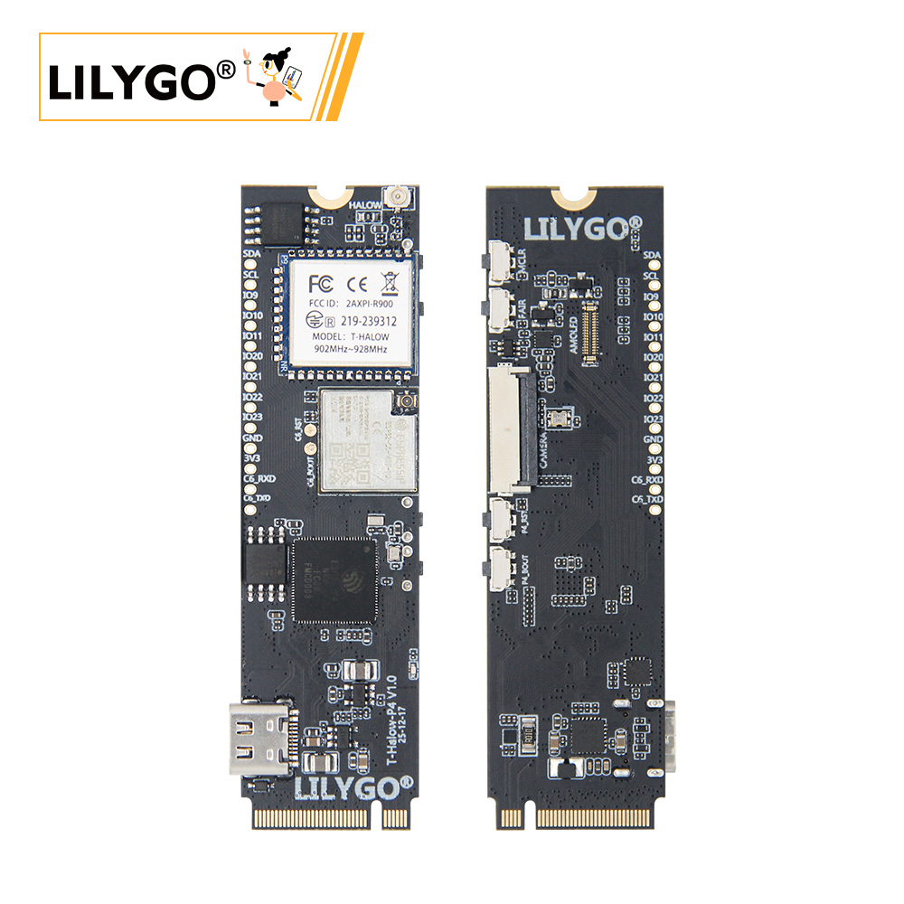
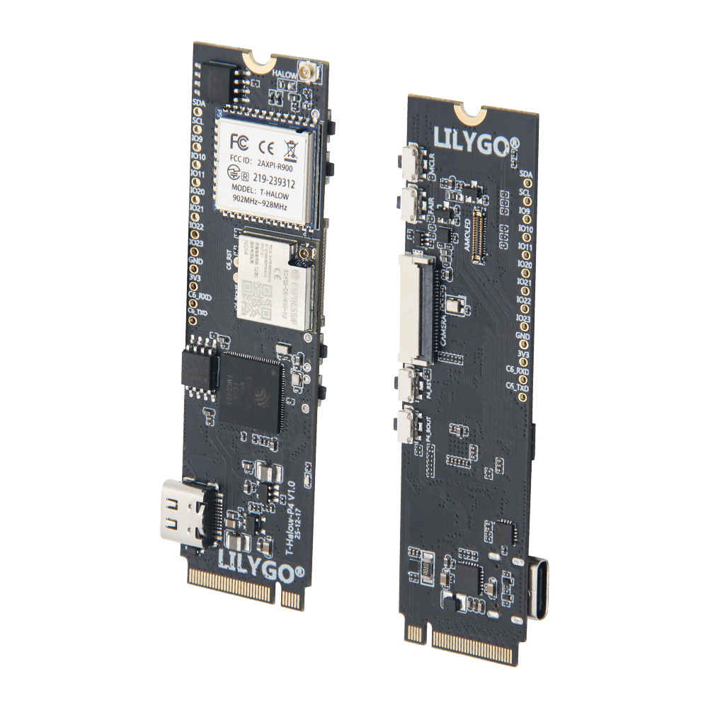
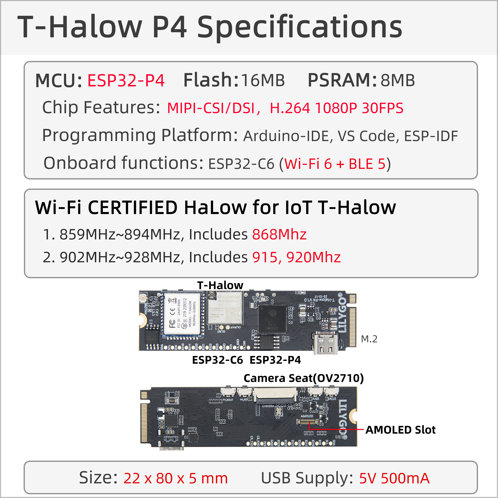
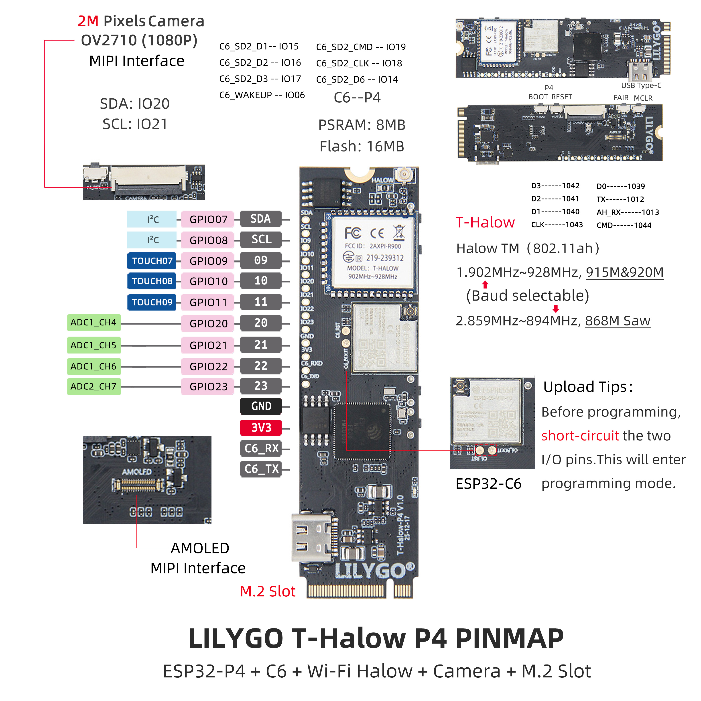

中文 简体
中文 简体LILYGO T-Halow-P4

📦 项目版本
T-Halow-P4 是 T-Halow 系列的高性能升级版本，基于 ESP32-P4 主控，集成 ESP32-C6 辅助处理器和 T-Halow 模块。请根据您的需求选择相应的文档：
| 版本 | 发布时间 | 主要特性 | 文档链接 |
|---|---|---|---|
| T-Halow-P4 | 2025-12-04 | ESP32-P4 + ESP32-C6 + T-Halow 模块 | GitHub 仓库 |
| T-Halow | 2023-08-23 | ESP32-S3 + T-Halow 模块 | T-Halow 文档 |
注意：T-Halow-P4 与 T-Halow 使用相同的 AT 指令集。
关于 TX-AH 模块的 SDK，泰芯提供了非操作系统驱动程序，参考：taixin-nonos-driver
🚀 产品概述

LILYGO T-Halow-P4 是一款高性能物联网开发板，基于 ESP32-P4 主控，集成 ESP32-C6 辅助处理器和 T-Halow 远距离通信模块。专为需要高性能处理、远距离通信和多媒体应用的场景设计，适用于智能安防、工业监控、远程巡检等专业应用。
核心特性
- ✅ 高性能处理：ESP32-P4 主控，支持复杂图形与视频任务处理
- ✅ 双核协同：ESP32-C6 辅助处理器，支持 Wi-Fi 6 与蓝牙 5.3
- ✅ 远距离通信：T-Halow 模块支持 Wi-Fi HaLow (802.11ah)
- ✅ 多媒体接口：板载 MIPI-DSI 显示屏接口和 MIPI-CSI 摄像头接口
- ✅ 图像处理：支持 JPEG 图像解码 (1080P 30fps)，PPA，2D DMA
- ✅ 视频编码：支持 H264 编码，JPEG 编码，1080P 画面
- ✅ 丰富外设：支持 SPI、I2S、I2C、LED PWM、以太网等
📊 硬件规格

| 项目 | 参数 |
|---|---|
| 主控芯片 | ESP32-P4 (高性能处理器) |
| 辅助处理器 | ESP32-C6-MINI (Wi-Fi 6 + 蓝牙 5.3) |
| Flash 存储 | 16MB Nor Flash (QSPI接口) |
| PSRAM | 32MB (封装内叠封) |
| 无线协议 | Wi-Fi 6 + 蓝牙 5.3 (ESP32-C6) |
| Wi-Fi HaLow | 支持 802.11ah 远距离通信 |
| 显示屏接口 | MIPI-DSI，支持触控 |
| 摄像头接口 | MIPI-CSI，支持 1080P 画面 |
| 图像处理 | JPEG 解码 (1080P 30fps)，PPA，2D DMA |
| 视频编码 | H264 编码，JPEG 编码 |
| 外设接口 | SPI、I2S、I2C、LED PWM、以太网等 |
| 编程平台 | ESP-IDF v5.4.1+ |
| 开发环境 | Visual Studio Code |
引脚定义 (PINMAP)

I2C 引脚：
- I2C_SCL: IO8
- I2C_SDA: IO7
Halow 模块引脚：
- AH_CMD: IO44
- AH_CLK: IO43
- AH_D3: IO42
- AH_D2: IO41
- AH_D1: IO40
- AH_D0: IO39
- AH_TX: IO12
- AH_RX: IO13
ESP32-C6 引脚：
- ESP32C6_CMD: IO19
- ESP32C6_CLK: IO18
- ESP32C6_D3: IO17
- ESP32C6_D2: IO16
- ESP32C6_D1: IO15
- ESP32C6_D0: IO14
- ESP32C6_WAKEUP: IO6
摄像头/显示屏引脚：
- TOUCH_SCL: IO8
- TOUCH_SDA: IO7
- TOUCH_INT: IO11
- TOUCH_RST: IO10
- MIPI_DSI_RST: IO9
GND GND
┌────────────────────────────────────────────────┐ ┌─────────────────────────────────────────────────────────┐
│ │ │ │
│ │ │ │
│ │ │ │
│ │ │ │
│ │ │ │
│ │ │ │
│ │ │ │
│ │ │ │
│ ┌───────────────┴─────────────┴──────────────────┐ │
│ │ │ ┌──────────┴───────────┐
│ │ │ DSI DATA 1P │ │
│ │ ├───────────────────────────┤ │
┌───────────┴─────────┐ CSI DATA 1P │ │ │ │
│ ├──────────────────────┤ │ DSI DATA 1N │ │
│ │ │ ├───────────────────────────┤ │
│ │ CSI DATA 1N │ ESP32-P4 │ │ │
│ Camera ├──────────────────────┤ │ DSI CLK N │ LCD Screen │
│ │ │ ├───────────────────────────┤ │
│ │ CSI CLK N │ │ │ │
│ ├──────────────────────┤ │ DSI CLK P │ │
│ │ │ ├───────────────────────────┤ │
│ │ CSI CLK P │ │ │ │
│ ├──────────────────────┤ │ DSI DATA 0P │ │
│ │ │ ├───────────────────────────┤ │
│ │ CSI DATA 0P │ │ │ │
│ ├──────────────────────┤ │ DSI DATA 0N │ │
│ │ │ ├───────────────────────────┤ │
│ │ CSI DATA 0N │ │ │ │
│ ├──────────────────────┤ │ └──────────────────────┘
│ │ │ │
└───────┬──┬──────────┘ │ │
│ │ I2C SCL │ │
│ └─────────────────────────────────┤ │
│ I2C SDA │ │
└────────────────────────────────────┤ │
└────────────────────────────────────────────────┘
📡 技术特性介绍
Wi-Fi HaLow (802.11ah)
Wi-Fi HaLow 是专为物联网优化的远距离、低功耗 Wi-Fi 标准。在相同发射功率下，比传统 2.4GHz/5GHz Wi-Fi 拥有更远的传输距离与更强的穿墙能力。
T-Halow-P4 搭载泰芯 TX-AH 模组，支持：
- 工作频段：730–950MHz
- 信道带宽：1/2/4/8MHz 可调
- 物理吞吐量：150Kbps – 32.5Mbps
- 传输距离：可达数公里（视环境）
ESP32-P4 高性能处理
ESP32-P4 是高性能处理器，专为复杂图形和视频任务设计：
- 支持 JPEG 图像解码 (1080P 30fps)
- 像素处理加速器 (PPA)
- 2D DMA 图像加速器
- 支持 H264 和 JPEG 视频编码
ESP32-C6 无线连接
ESP32-C6 提供先进的无线连接能力：
- 支持 Wi-Fi 6 (802.11ax)
- 蓝牙 5.3
- 使用 esp-hosted-mcu 方案
- 通过 SDIO 与 ESP32-P4 通信
🔄 快速开始
开发环境搭建
项目的例程都是在 ESP-IDF v5.4.1 环境下编译，使用 T-Halow-P4 时需要保证 ESP-IDF 版本 ≥ 5.4.1。
环境搭建步骤：
- 安装 ESP-IDF v5.4.1+（参考官方文档）
- 克隆 T-Halow-P4 项目仓库
- 进入 examples 目录选择示例程序
项目编译与烧录
编译步骤：
cd ~/examples/xxx
idf.py set-target esp32p4
idf.py build
下载模式设置：
- 插上 USB，打开串口工具
- 按住 BOOT 键不松手
- 按下 RST 键后马上松手
- 串口输出 "wait for download" 表示进入下载模式
- 松开 BOOT 键，关闭串口
烧录程序：
idf.py -p PORT flash
Halow 模块使用
Halow 模块通过 SPI + UART 与 ESP32-P4 连接：
- SPI：用于数据传输，使用泰芯官方驱动程序
- UART：用于收发 AT 命令和显示运行信息
数据传输链路：
ESP32P4 -> SPI/SDIO -> Halow -> RF(AP) -> RF(STA) -> SPI/SDIO -> Halow -> ESP32P4
📚 官方文档（英文）
更多 TX-AH 模块信息请访问泰芯官方网站：资料下载
| 文档名称 | 链接 |
|---|---|
| 频率设置说明 | 下载 |
| TX-AH-Rx00P 系列模块技术规格书 | 下载 |
| TX-AH-Rx00P 桥接说明 | 下载 |
| AH 模块 AT 指令开发指南 | 下载 |
| AH 模块开发板说明 | 下载 |
| AH 模块硬件设计指南 | 下载 |
| AH 性能测试方法 | 下载 |
| AH-RF EMC 认证指南 | 下载 |
📊 TX-AH 型号对比
| 模组名称 | 正面丝印区分 | 认证情况 | 支持频段 | 备注 |
|---|---|---|---|---|
| TX-AH-R900P | 左下角 P9，右下角 P9 | 可通过 FCC/CE 认证 | 860MHz ~ 928MHz | 标准版本 |
| TX-AH-R900PNR | 左下角 P9，右下角 NR | 可通过 FCC 认证 | 902MHz ~ 928MHz | 带 915M Saw，改善接收性能 |
| TX-AH-R900PNR-860M | 左下角 86，右下角 NR | 可通过 CE 认证 | 859MHz ~ 894MHz | 带 875M Saw，改善接收性能 |
备注：
- P 系列模组与早期 A 系列模组的区别：
- (1) P 系列左下角丝印以 P 开头，A 系列以 R 开头
- (2) P 系列的 PIN4/5 需要供电，A 系列不需要
- 模组默认不带屏蔽罩，带屏蔽罩的版本在模组名称后加 -S 后缀（S 表示 Shield）
🚀 快速开始
🟢 推荐使用 PlatformIO，因为这些示例是在 PlatformIO 上开发的。🟢
PlatformIO 开发环境
- 安装 Visual Studio Code 和 Python，克隆或下载本项目；
- 在 VSCode 扩展中搜索并安装
PlatformIO插件； - 安装完成后重启 VSCode；
- 打开本项目，PlatformIO 会自动下载所需的三方库和依赖，首次过程较长，请耐心等待；
- 所有依赖安装完成后，打开
platformio.ini配置文件，在example中取消注释选择示例程序，然后按Ctrl+S保存； - 点击 VSCode 下方的 ☑️ 编译项目，插入 USB 并在 VSCode 中选择 COM 口；
- 最后点击 ➡️ 按钮将程序下载到 Flash；
Arduino IDE 开发环境
安装 Arduino IDE
将
本项目/lib/下的所有文件复制并粘贴到 Arduino 库路径（一般为C:\Users\用户名\Documents\Arduino\libraries）；打开 Arduino IDE，点击左上角
文件 -> 打开，打开本项目/example/xxx/xxx.ino下的示例；按以下方式配置 Arduino，完成后可点击 Arduino 左上角按钮编译和下载；
| Arduino IDE Setting | Value |
|---|---|
| Board | ESP32S3 Dev Module |
| Port | Your port |
| USB CDC On Boot | Enable |
| CPU Frequency | 240MHZ(WiFi) |
| Core Debug Level | None |
| USB DFU On Boot | Disable |
| Erase All Flash Before Sketch Upload | Disable |
| Events Run On | Core1 |
| Flash Mode | QIO 80MHZ |
| Flash Size | 16MB(128Mb) |
| Arduino Runs On | Core1 |
| USB Firmware MSC On Boot | Disable |
| Partition Scheme | 16M Flash(3M APP/9.9MB FATFS) |
| PSRAM | OPI PSRAM |
| Upload Mode | UART0/Hardware CDC |
| Upload Speed | 921600 |
| USB Mode | CDC and JTAG |
🧭 应用场景
- 🏭 工业安防监控：高性能图像处理 + HaLow 远距离通信
- 🌾 农业环境监测：大范围农田传感器数据收集与远程监控
- 🏗️ 工地巡检：远距离视频巡检与设备状态监控
- 🔬 科研野外数据采集：长距离可靠数据传输与多媒体处理
- 📡 物联网网关：连接大量低功耗传感器节点
- 🎥 智能摄像头：支持 H264 编码的远程监控系统
⚠️ 重要提示
❗ 更多 TX-AH 模块资料请参考泰芯官网：资料下载地址
📚 资源下载
官方文档
开发资源
依赖库
espressif/esp_hosted^1.4.1espressif/esp_wifi_remote^0.8.5espressif/esp_lcd_ek79007^1.0.2lvgl/lvgl